写在前面
月初时候薅了日本政府的go to羊毛，一个人跑去京都旅行了。
算是完成了一直以来心心念念的京都之旅，而且是在这么个疫情期间。
这篇做个简单的行程记录。
Day1
2020年10月31号，早上10点多我就背着背包坐上了のぞみ号前往京都，这是我第一次乘坐新干线。
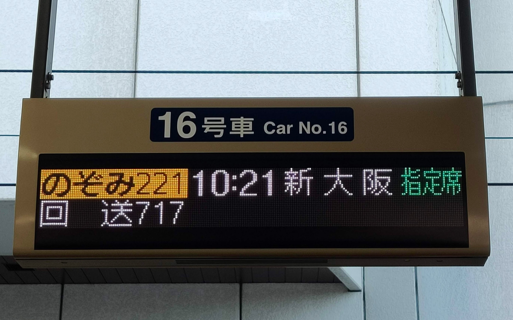
新干线路途可以看得到富士山，十一月初的富士山竟然才刚开始积雪的样子，比我以为的要晚一些。
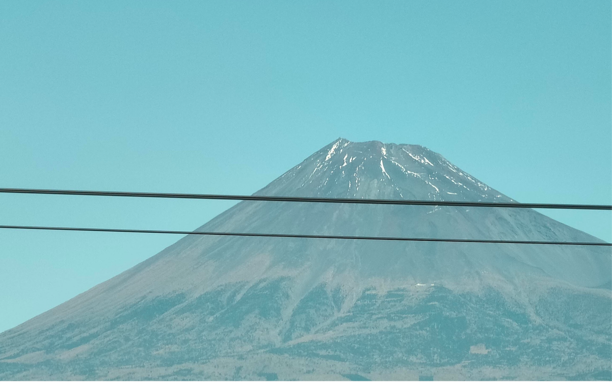
到达京都的时候已经是中午了，身为日本最大观光城市的车站，抛开地下部分，京都站比起东京站还要大，而且更加新潮漂亮，这倒是让我蛮意外的，还以为古都的车站也会更有古香古色的感觉（有点不切实际）。
从京都车站沿着主干道的商业街走的话，也是很繁华现代的街道的感觉，在街道规划上我觉得比东京市区好一些，也更宽敞，不过第二天坐巴士的时候发现该堵车时还是很堵。
在京都站的地下街吃了一顿お茶漬け（茶泡饭），离酒店check in还有一两个小时，我就坐地铁去了京都御所（算是明治之前的皇居）。
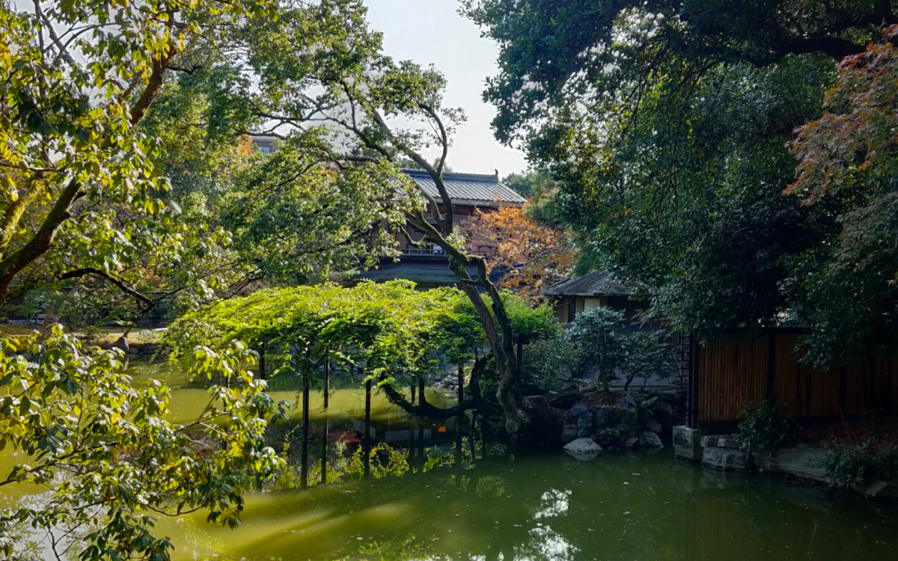
京都御所给人的感觉就是大，加上疫情期间，哪怕是周末也没什么人流，比较可惜的是里面的宫殿下午不开放没能参观成。
京都御所随处都能听到乌鸦嘎嘎叫的声音，虽然日本到处都是乌鸦，但一群乌鸦齐飞还是比较少见的。我对乌鸦的印象不太好，每次听到乌鸦嘎嘎叫都会让我联想到电影《恶之教典》里男主门前树上乱叫的乌鸦，总觉得乌鸦附近是不是会有那种日式癫狂性格的杀人魔出没。
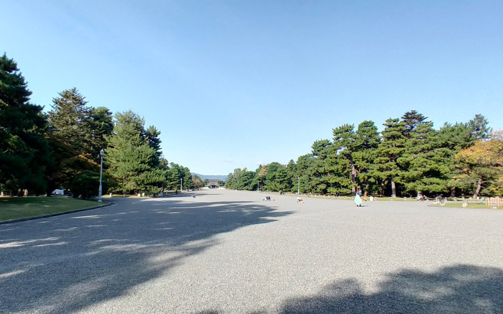
日本的薅羊毛规则也是各种复杂，以这次行程为例，大概减免了交通+住宿的三分之一，然后还有5000日元是通过优惠券返还的，我选择的是电子优惠券，要行程开始的当天下午才可以领取。
因为是套餐购买的，所以原本就对住宿就没抱太大期待，不过check in后看到窗户外面1米的墙多少还是有点傻眼，好在内部配套还算完备。
在酒店简单收拾完就出发前往京都塔看夕阳了，途中路过了東本願寺，拍照！
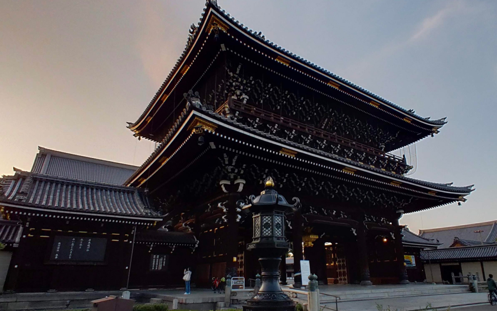
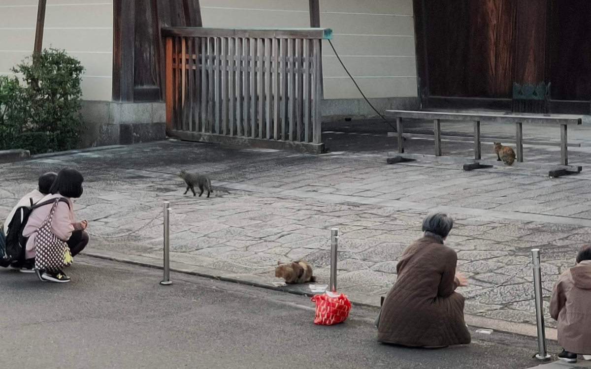
京都塔的外形绝对算不上好看，不过不妨碍上去看景色。
官网推荐的观景时间段是早上，傍晚和夜晚，所以临近傍晚前排队的人还是蛮多的，我大概排了半个小时的队才上了观景台，没错过夕阳。
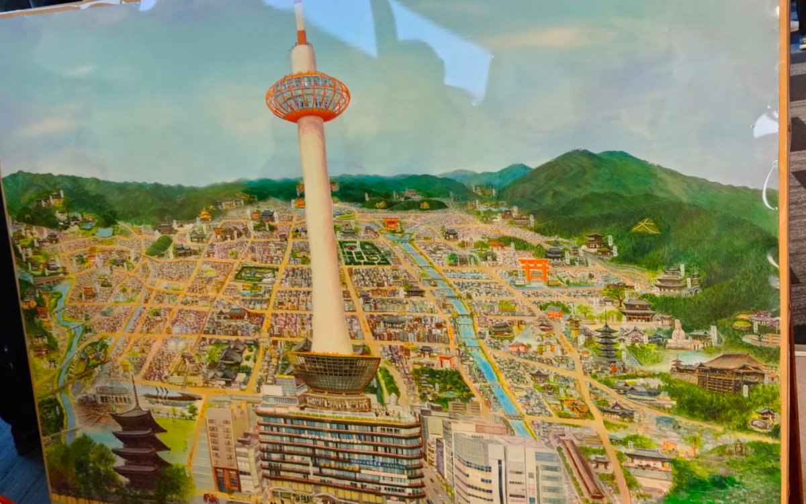
从高处眺望京都的景色还是不错的，在上面肉眼可以看见京都的各种寺庙，还有大文字山上的“大”字，还是蛮想看看大文字山点火的，莫名会有种RPG氛围。
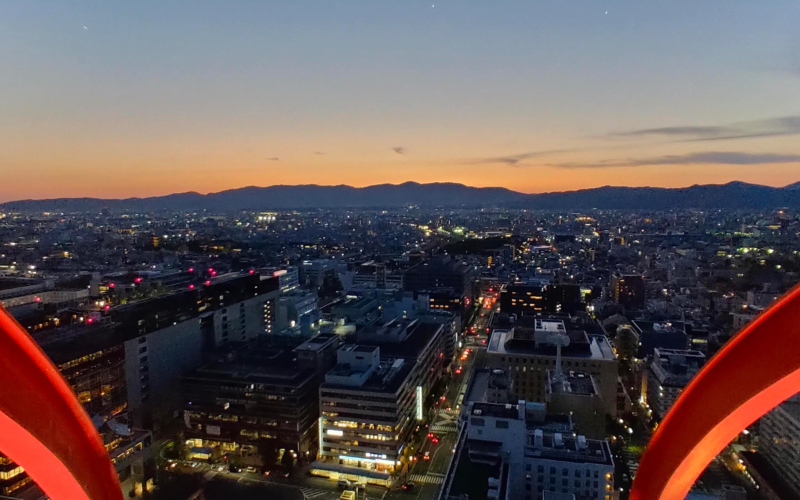
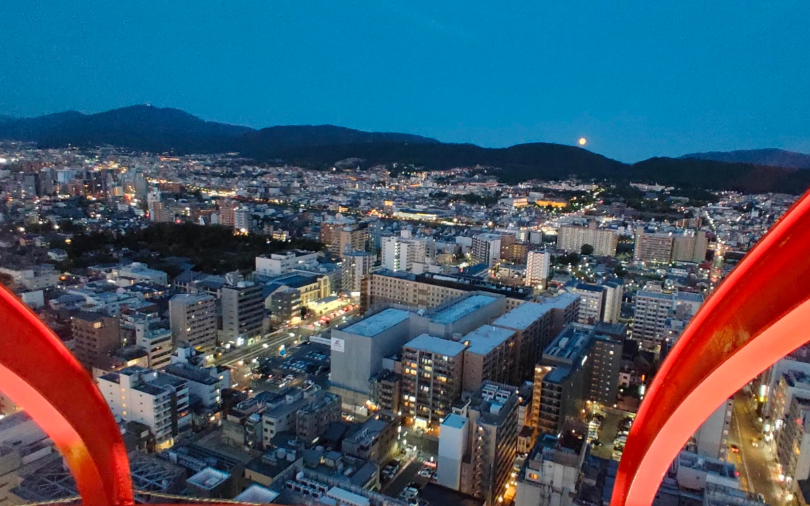
登过京都塔，随便找了家做鸡肉的店进去吃饭，菜一般般，而且不幸吃饭时候旁边来了一个大叔，坐下翻了下菜单就把店员叫过来一通クレーム，大概是说为什么官网上面有蟹料理店里菜单却没有，虽然我也好奇为什么一家鸡肉专门店要被苛责没有蟹料理，不过那个大叔太吵实在很难让人愉快吃饭，刚好我吃完了就起身结帐了。
结账时候用了go to送的优惠券，减了两千日元，算是愉悦了一点。
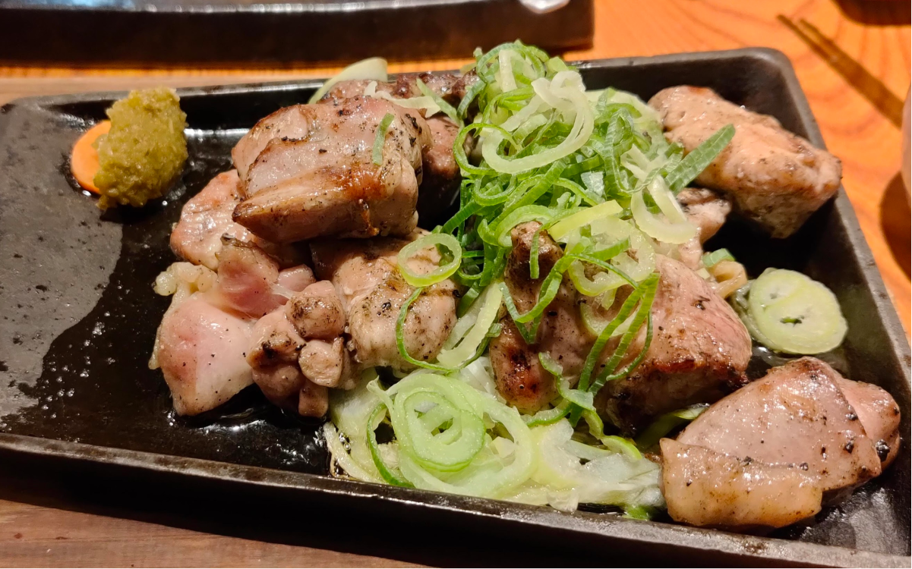
晚上回酒店看S10总决赛，苏宁输了，吃鱿鱼干的时候还把以前补过的牙磕碎了。
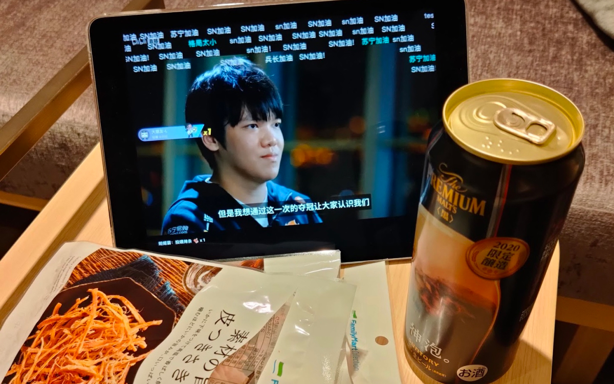
Day2
第二天是基本是景点打卡游，第一站去的岚山。
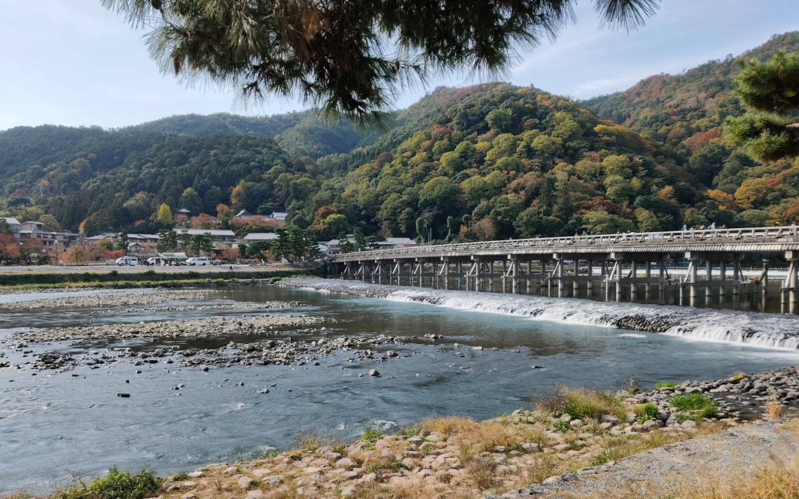
计算行程的时候并没有太特意查枫叶地图，到了京都才知道染红期刚开始，岚山也是一片半绿不红的样子，景色打了不少折扣。
路上的游客比我预想中的多不少，特别是天龙寺和竹林小径附近，感觉和疫情前去的景点人数差不多了，稍有不同的就是穿和服浴衣的年轻人特别多，而且基本都戴着口罩，但路边边走边吃东西的人也不少，口罩的作用更多只是一个公共场所礼仪。
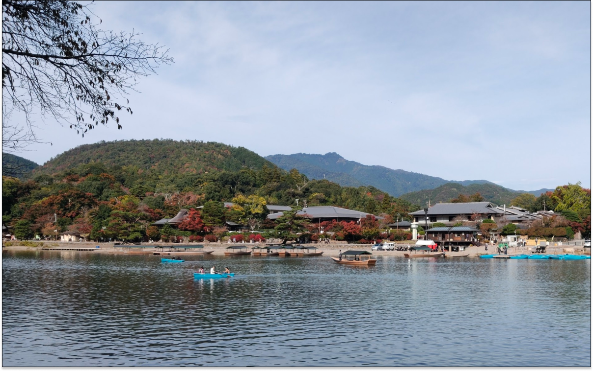
天龙寺没有进去看，当时是觉得寺庙有点腻了，离开后想想倒是有些后悔，因为天龙寺里面有云龙图（《天气之子》里面出现过得那种天井画），比后来去的清水寺有特色多了。
岚山另一个网红景点竹林小径倒是没让人失望，漫步在大片竹林中的感觉还挺浪漫的，竹林里还有专门给人力车开通的路径，光顾的人不少。
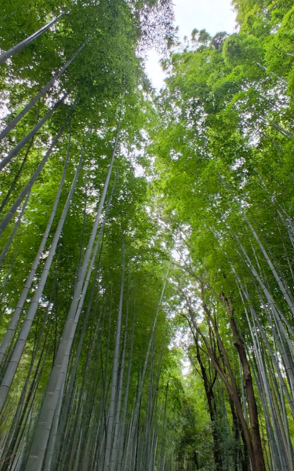
逛完岚山后原本打算是去金阁寺的，坐公交到了金阁寺才知道年底前进行装修，也是没做好攻略的教训。
午饭很奢侈的去了京都的豆腐老店奥丹吃豆腐料理，京都这些老店有个让我很佩服（无奈）的地方在于他们真的是在时代洪流中坚持传统，很多老店坚持只接受现金支付，很难让人联想到这是一个旅游城市。
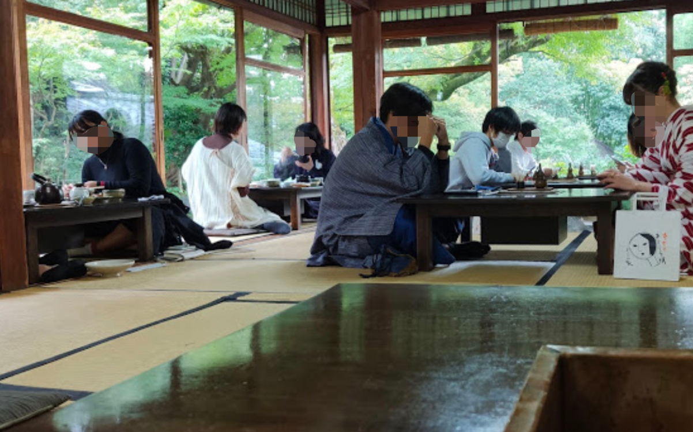
吃午饭的地方是在一个日式庭院，这还是我第一次坐在榻榻米的店里吃饭，他们提供的料理里面我最喜欢其中的一款烤豆腐。
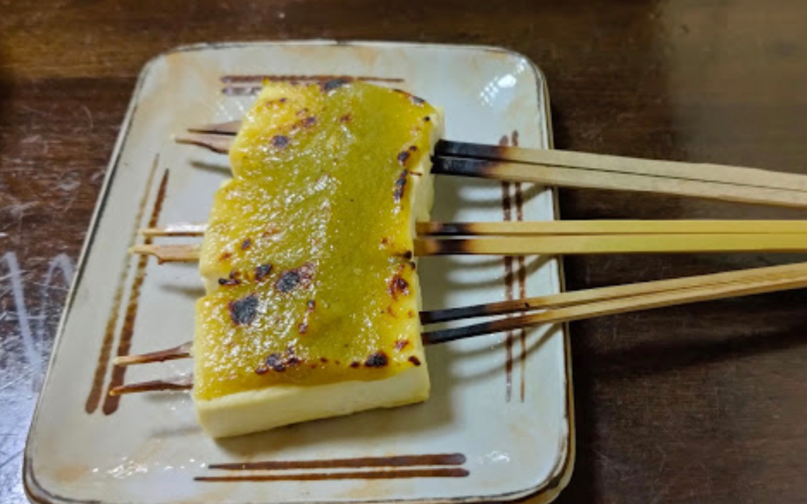
吃完饭后就直接散步到了清水寺，日本的很多大寺庙都是进场要入场费，然后你去参拜给香油钱，我刚来日本的时候也觉得很有骗钱的嫌疑，现在基本也是学着丢钱，许愿，拍拍手。
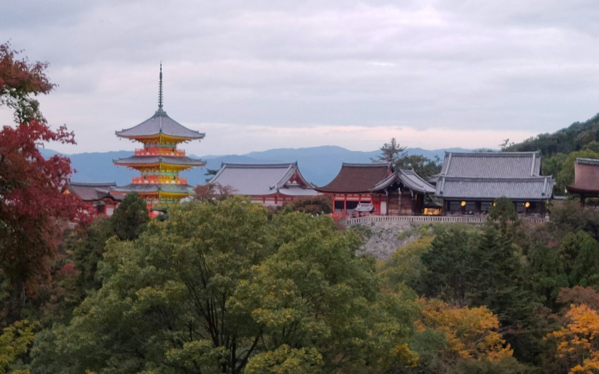
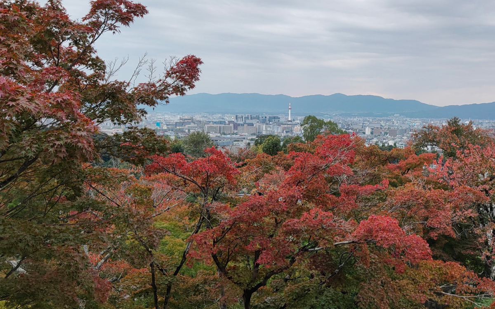
Day3
第三天京都下起了不小的雨，因为没有带雨伞，于是带回家的土特产多了一把京都便利店购买的雨伞。
check out后打算去的第一站是东寺。
东寺离京都车站很近，把行李都存到车站储物柜后，徒步走个十几分钟就到了。
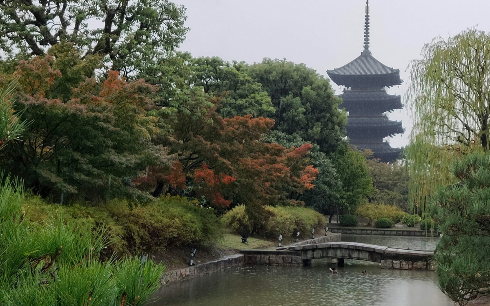
东寺算是这几天去的景点里占地面积相对小的，因为下雨天的缘故，寺庙什么看起来都老旧几分，还挺有传统的韵味。
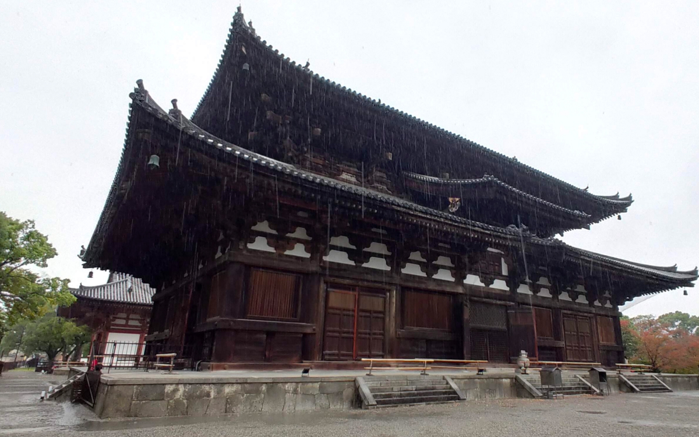
简单逛完东寺后，基本就是市区闲逛，中间突然特别想吃甜品，于是上网找到了一家网红的抹茶甜品店就跑过去了。
到了后才发现不愧是网红店，还没开店外面就排满了JKDK ，我在队列外纠结了好几分钟，有点拉不下脸混进去，于是就走了。
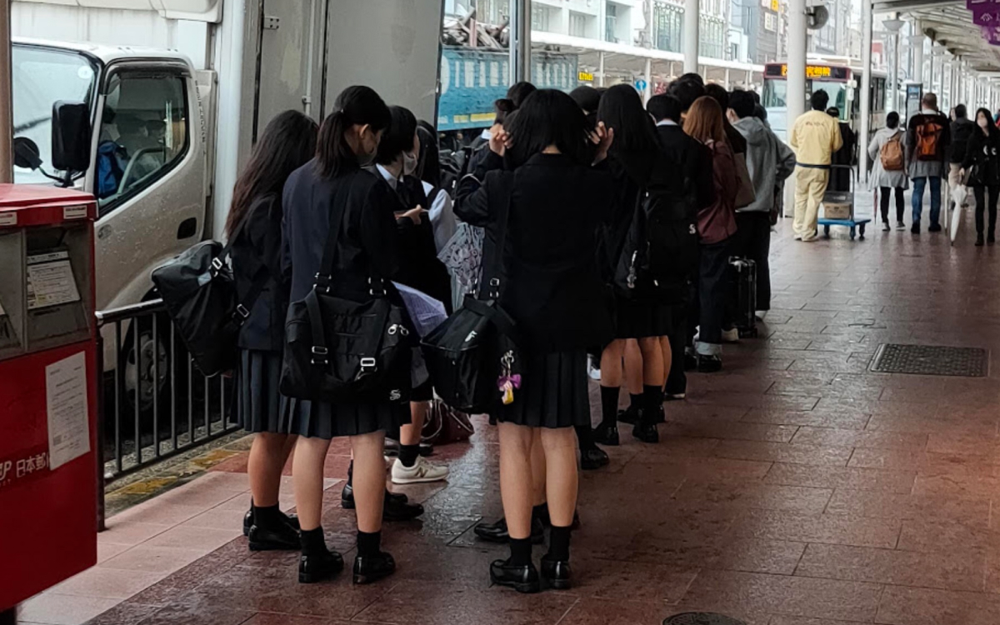
吃午饭的时间在附近随便找了一家叫蛇の目屋「じゃのめや」的拉面店，结果没想到成了一个惊喜。
这家拉面店是分批次招待客人的，不到10个座位，先放一批进去，吃完再放下一批。
我去得比较早，是第二批，当时排队的人也不多，不过排队排了快十分钟才觉得有点不对，后面竟然有不少人冒雨排队，当时还想说不是又无意间来到了很厉害的店。
进店点了一个鶏煮干しそば，不得不说有排队的价值，不到1000日元的拉面比我在东京吃过的拉面店都好吃很多。
吃完后闲逛又路过了网红甜品店，挣扎了一下还是抵不住甜食的诱惑去和JKDK一起排队了，彻底地败给了口欲。
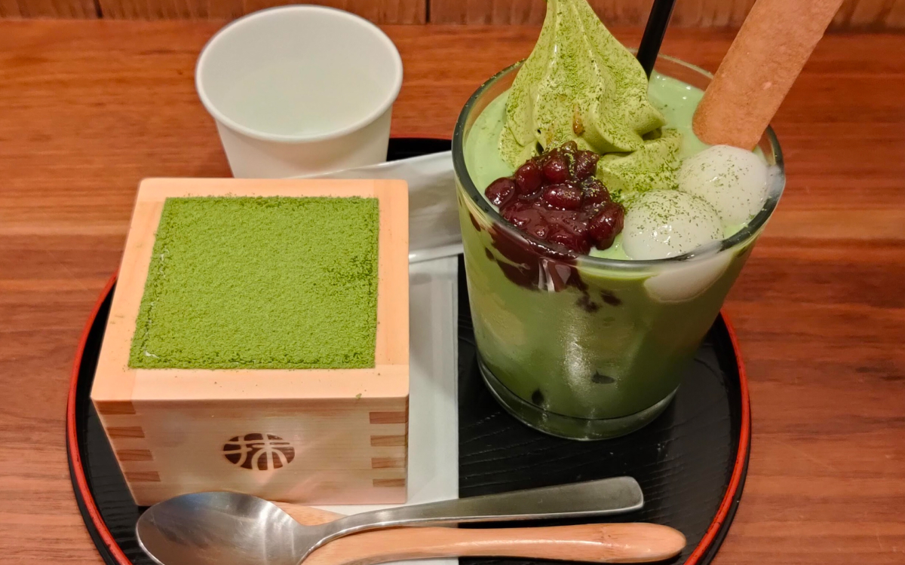
在京都最后的时间我选择了暴走鸭川，平和的鸭川真的分分钟让我这个荒川住民想叛变移居。
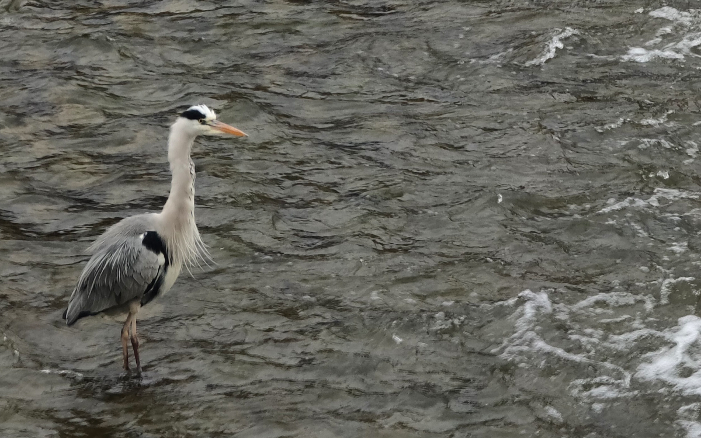
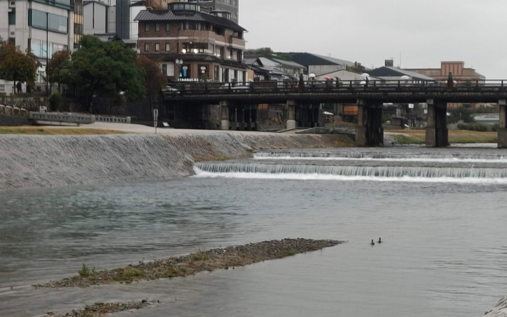
顺着鸭川暴走几公里回到京都站，稍微休息下也差不多到了回程时间，我的三天京都旅程也结束了。
写在后面
京都是我很仰慕的一个城市，虽然实际游玩后并不会有什么太大的心灵冲击，但确实也看到了传统文化在现代流传的一种形式，也是我很佩服日本的一个地方吧，3天的行程并不能把京都彻底转完，有机会我会再来看枫叶的。